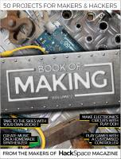
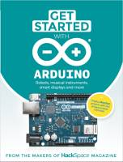
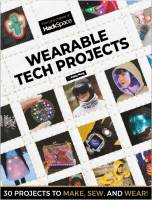
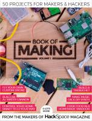

Esta página contiene enlaces a los números publicados de la revista HackSpace Books en 2019 - 2018.
Página web: Libros Revista HackSpace

Book of Making
Número 2 - 2019 diciembre
Descarga (PDF 52.5 MB, inglés)

Get Started with Arduino
Número 1 - 2019 noviembre
Descarga (PDF 61.2 MB, inglés)

Wearable Tech Projects
Número 1 - 2019 abril
Descarga (PDF 34.7 MB, inglés)

Número 1 - 2018 octubre
Descarga (PDF 49.0 MB, inglés)